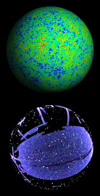

ma´ngle¹ (-nggel) v.t.
Hack, cut about, mutilate, by blows; cut roughly so as to disfigure; spoil (quotation, text, etc.) by gross blunders, make (words) unrecognizable by mispronouncing. [f. AF. ma(ha)ngler, app. frequent. of mahaigner MAIN]
– The Concise Oxford Dictionary.
Do you work with data on a spherical surface? Regardless of whether you deal with the celestial sphere, the surface of Earth, or some completely different
sphere, mangle could be for you. Mangle is a suite of free open-source software designed to deal accurately and efficiently with complex angular masks, such as typically occur
in galaxy surveys, terrestrial maps, etc. Mangle performs a wide variety of tasks: converts masks between many handy formats
(including HEALPix), rapidly finds the polygons containing a given point on the sphere,
rapidly decomposes a set of polygons into disjoint parts, expands masks in spherical harmonics, generates random points with weights given by the mask, and implements
computations for correlation function analysis.
To mangle, a mask is an arbitrary union of arbitrarily weighted angular regions bounded by arbitrary numbers of edges. The restrictions on the mask are only (1) that
each edge must be part of some circle on the sphere (but not necessarily a great circle), and (2) that the weight within each subregion of the mask must be constant.
Mangle is complementary to and integrated with the HEALPix package.
Loosely speaking, they are related like PDF and JPEG: mangle works with vector graphics whereas HEALPix works with pixels.
For a brief introduction to mangle, see QuickStart. If you are looking for the latest SDSS angular mask and galaxy data, see Data.